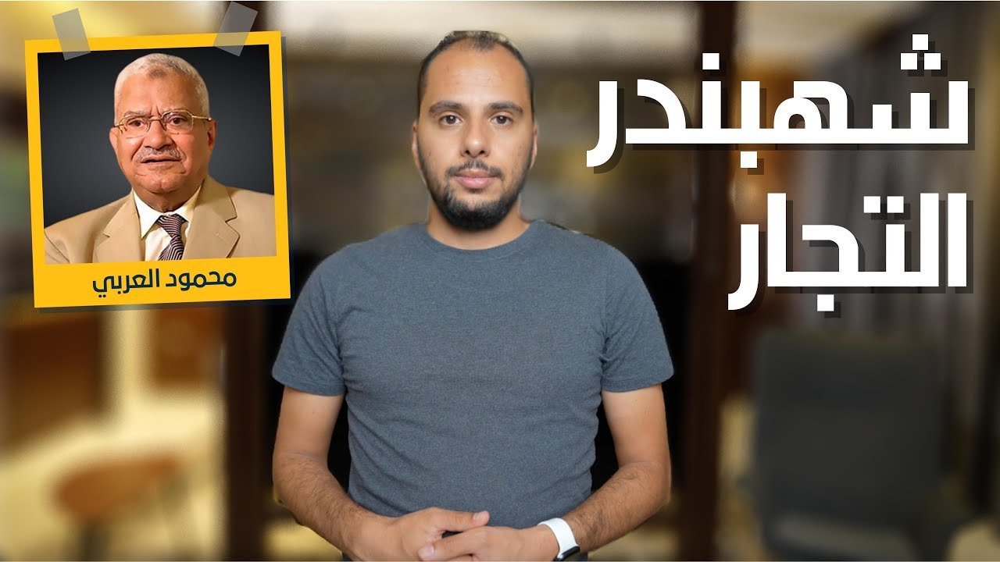

قصص نجاح
فك شفرة وسر نجاح شهبندر التجار ورائد الصناعة الإنسان محمود العربي
محمود العربي بدأ بـ30 قرش بلالين وبُمب في عيد القرية، واشتغل في محلات الموسكي، وفتح محله الخاص، وأقنع Toshiba تصنّع في مصر. إيه اللي خلّى الطفل اللي ما دخلش المدرسة شهبندر التجار؟

شغّل الحلقةمحمود العربي أسس إمبراطورية في التجارة والصناعة، والحكاية بدأت برأس مال 30 قرش.2 في المقال ده هنحاول نكتشف أسرار العربي ونفك شفرة نجاحه: إزاي اتحول من شخص بسيط غير معروف لواحد من أشهر رجال الأعمال في مصر، وأكترهم شعبية.
في 9 سبتمبر 2021 توفى رجل الأعمال الكبير محمود العربي، صاحب إمبراطورية العربي الشهيرة.1 واللقطات اللي في الحلقة من جنازته بتعبّر عن مقدار حب الناس ليه، وتقديرهم لإنسانيته وفعله للخير قبل تقديرهم لنجاحاته.
محمود العربي اتولد في 15 أبريل سنة 1932، في قرية أبو رقبة، مركز أشمون، التابع لمحافظة المنوفية.2 والده كان بيشتغل في الزراعة، وبسبب الظروف المادية وقتها ما قدرش يدخّله المدرسة، لكنه ألحقه بكُتّاب القرية.
إزاي بدأ محمود العربي التجارة وهو طفل؟ 1:08
محمود شكله كده كان بيهوى التجارة من صغره. وبحسب حكايته في مذكراته، أول مشروع استثماري ليه كان برأس مال 30 قرش: اشترى بيهم بلالين وبُمب وباعهم للأطفال في العيد، وقدر يحقق منهم 10 قروش مكسب، وده خلّاه يكرر الفكرة دي كل عيد.2
ولما كمّل 10 سنين سافر مع أخوه القاهرة، وبدأ أول عمل ليه في ورشة تصنيع عطور، لكنه ما استمرش فيها أكتر من شهر، علشان كان حابب العمل في التجارة.23 وبعد كده اشتغل في محل في الموسكي، وزي ما حكى، صاحبه «عم رزق» كان بيبيع الخردوات ولعب الأطفال والأدوات المكتبية. وهناك اتعلم أول وأهم قاعدة في التجارة: اكسب قليل، وبيع كتير.
وبيحكي عن تجربة أول شغل ليه إن زباين عم رزق كانوا كتير جدًا بسبب الأسعار الرخيصة، لكنه كان سيئ في تعامله مع الناس. ولما جه هو، بدأ يغيّر طريقة التعامل دي، وده في حد ذاته زوّد عدد الزباين.
أمانة محمود وحبه للشغل كانت مخلّياه يشتغل بإيده وسنانه، وكان شايل تجارة المحل كله على كتافه. لدرجة إن في يوم من أيام المواسم فضل سهران لتاني يوم عشان يبيع للناس، وعمل في اليوم ده إيراد تاريخي وصل لـ40 جنيه تقريبًا.3 لكن في اليوم ده العربي اتضايق جدًا من موقف عم رزق، اللي ما كانش فيه أي تقدير لمجهوده: جاله تاني يوم وابتدى يعد الفلوس، واكتفى إنه يقول له «روح ريّح لك ساعتين عشان تلحق تيجي لي بالليل».
فقرر إنه يمشي وما يرجعلوش تاني، وراح يشتغل في محل النصر للبيع بالجملة، واستمر فيه 15 سنة تقريبًا.4 وحتى أثناء خدمته في الجيش كان بيشتغل فيه في أوقات الإجازات.3
إزاي اتولد محل العربي؟ 2:30
سنة 1958، بعد خروجه من الجيش، سيطرت عليه فكرة إن الوظيفة صعب تأمّن حياته هو وأسرته، وبدأ يحلم بامتلاك مشروعه الخاص. وفي الفترة دي اتعرف على صديق عمره، عنتر، اللي كان بيشتغل معاه في شركة النصر برضو، وكان شغال Sales بيلف على التجار في المحافظات.3
عنتر كمان كان بيشارك العربي حلمه إنهم يمتلكوا مشروعهم الخاص، وفضلوا هما الاتنين يحلموا 6 سنين كاملة، لغاية ما حلمهم بقى حقيقة سنة 64، بتأسيس محل العربي للتجارة.3 وكان معاهم اتنين شركا تانيين داخلين براس المال، وهما داخلين بالمجهود.
محل العربي اتولد كبير، وده بفضل النصيحة الذهبية في التسعير بتاعة عم رزق: اكسب قليل وبيع كتير، بالإضافة لسمعة محمود وعنتر اللي اكتسبوها بسبب أمانتهم وأخلاقهم طول فترة شغلهم في الموسكي.
لكن يبدو إن القدر كان مجهّز اختبار قاسي لمحمود العربي. عنتر تعب مع الافتتاح، واستمر تعبه سنتين كاملين ما قدرش يكون متواجد فيهم، لكن محمود كان بيقوم بالشغل لوحده من غير أي تذمّر، وكان بيوصّل لعنتر نصيبه دايمًا لغاية ما توفى.3
بعد وفاة عنتر، الشركا التانيين بدأوا يطلبوا من العربي إن الشركة تكون على 3 بدل 4، لكنه رفض بشدة، وأصر إن أولاد عنتر يفضلوا شركا.3 وبسبب موقفه ده الشركا اتضايقوا وبقى فيه مشاكل بينهم، وزي ما حكى، المشاكل دي انتهت بإن محمود أخد محل أكبر وساب لهم المحل القديم. وفضلت شراكته مع أولاد عنتر مستمرة لغاية ما كبروا وبقوا في الجامعة وطلبوا هما فض الشراكة. وكده نجح العربي في اختبار القدر، وبان معدنه الأصيل.
إزاي وصل محمود العربي لتوكيل Toshiba؟ 4:02
بعدها بدأ محمود يتعامل مع السوق ويتطور مع تطوره. فمثلًا لما الاستيراد اتوقف، بدأ هو يصنع ألوان شمع، وعمل لها حملة إعلانية في التلفزيون، والألوان دي غرّقت مصر كلها.3 ولما السوق اتغير تاني وبقى فيه اتجاه لاستيراد التلفزيونات والأجهزة الكهربائية، بدأ يطوّر تجارته ويحوّلها لتجارة أجهزة كهربائية.
وهنا ييجي دور Ando، مندوب شركة Toshiba اللي بعتوه مصر علشان يتعلم اللغة العربية ويدوّر لهم على وكيل. وما لقاش أفضل من العربي عشان يرشّحه لمجلس الإدارة، فقرروا يبعتوا فريق في زيارة مفاجئة سنة 1974.3 وفي الزيارة دي خدوا قرارهم إن العربي ما ينفعش يكون وكيل لهم: لما دخلوا الشركة لقوه راجل بسيط قاعد في وسط عماله، وما فيش مكتب ولا حاجة.
لكن Ando ثبت على موقفه إن ما فيش أفضل من العربي في مصر علشان يكون وكيل لهم، فوافقوا يجربوا معاه لمدة سنة ويشوفوا بعدها المبيعات عاملة إزاي.3 وفعلًا بعد سنة التجربة، قررت Toshiba تختار العربي يكون هو الموزع الوحيد لمنتجاتها في مصر.
إزاي أقنع العربي Toshiba تصنّع في مصر؟ 4:52
لكن محمود العربي ما كانش عنده سقف لأحلامه. في أول زيارة ليه لليابان، سنة 1975، قرر إنه ما يكونش مجرد موزع، وإنه لازم يتجه للتصنيع علشان يضيف قيمة لبلده وأولاد بلده، خصوصًا بعد ما شاف إزاي مصنع Toshiba بيشتغل، وإزاي التصنيع بيتم بمنتهى الدقة والحرفية.13
حلم العربي ده كان على أرض الواقع صعب جدًا، ولما عرض الفكرة على إدارة Toshiba رفضوا رفض قاطع، وقالوا له: انت يا دوب بقى لك سنة معانا، ولسه واخد التوكيل بالعافية. لكن العربي كان عنده حلم ورغبة، وفضل يلح على إدارة Toshiba كتير، وكل مرة كانوا بيردوا برفض قاطع.
لغاية ما قرر يغيّر طريقته معاهم. وزي ما حكى، أخد خطوة جريئة: سافر تايوان وكوريا وهونج كونج، وجمع من هناك عروض أسعار لشركات متخصصة في تصنيع المراوح، وراح بيها على Toshiba على طول، وقال لهم: دي شركات مستعدة تساعدنا في تصنيع المروحة، وهنبدأ معاها بتصنيع 40% محلي.5
وToshiba في الوقت ده تحديدًا ما كانتش تقدر تخسر العربي، اللي كان بيوزّع لهم كميات كبيرة، في المراوح لوحدها. وفي الآخر وافق مجلس إدارة Toshiba على شروط العربي في التصنيع، اللي بتبدأ من 40% محلي وتزيد مع الوقت.35
والعربي ما اكتفاش بتصنيع المروحة: بقى بيصنّع كل حاجة تقريبًا، وتوسع أكتر وأكتر، عشان بعد سنين من التعب والنجاح تبقى إمبراطورية العربي اللي إحنا شايفينها دي. مثال قوي على قيمة الحلم والعمل الجاد، وقيمة الحب والإنسانية والعطاء.
إيه سر نجاح محمود العربي؟ 6:24
لو ركزت في الجزء اللي اتكلمت عنه من حياة العربي، هتكتشف كام حاجة أعتقد إنها كانت سر نجاحه.
أول حاجة إنه كان إنسان بمعنى الكلمة. العربي قال في مذكراته إنه لما كان بيحلم بمشروعه كان لسببين: الأول إنه يبقى معاه أسلحته اللي يحمي بيها أسرته من الفقر والاحتياج، والتاني إنه يوفر فرص عمل أكتر للناس. وده اللي عمله لما أسس تجارته في البداية، ولما سعى للتصنيع في مصر. والقصص عن إنسانيته وعطفه مش بتنتهي، ويمكن أعظمها اللي عمله مع شريكه عنتر، ومن بعده أولاده.
التانية إنه كان تلميذ جيد التعلم: اتعلم درسه الأول من عم رزق، بيع كتير واكسب قليل، واتعلم دروس كتير من شركة النصر، ودروس أكتر من اليابانيين. وكان أهم من التعلم مهارته في تنفيذ اللي اتعلمه، وأعتقد كلنا شفنا نتيجته.
والسر التالت كان الحلم مع العمل الجاد. من أول حلم وأول محل، اللي استمر حلمه فيه 6 سنين،3 لدرجة إنه زي ما حكى كان بيدعي كل يوم: «يا رب محل البرنسيسة ومليون جنيه»، مرورًا بحلم توكيل Toshiba، ووصولًا لحلم التصنيع وإمبراطورية العربي.
وكل اللي قلته ده تقريبًا ولا حاجة في قصة العربي. أنا أخدت بس كام محطة تخدم فكرة البرنامج، وما غطّيتش خالص الجانب الإنساني اللي قصصه مش بتنتهي. ودي كانت نظرة على حياة شهبندر التجار، ورائد التصنيع، الإنسان محمود العربي.
فصول الحلقة
أسئلة شائعة
محمود العربي اتولد فين وإمتى؟
محمود العربي اتولد في 15 أبريل سنة 1932، في قرية أبو رقبة، مركز أشمون، التابع لمحافظة المنوفية.
إزاي بدأ محمود العربي التجارة؟
بحسب حكايته، أول مشروع ليه كان برأس مال 30 قرش: اشترى بلالين وبُمب وباعهم للأطفال في العيد، وحقق منهم 10 قروش مكسب، وكرر الفكرة دي كل عيد.
إيه أول قاعدة اتعلمها محمود العربي في التجارة؟
في أول محل اشتغل فيه في الموسكي اتعلم أول وأهم قاعدة في التجارة: اكسب قليل، وبيع كتير.
إزاي محمود العربي بقى وكيل Toshiba في مصر؟
مندوب Toshiba في مصر، Ando، رشّحه لمجلس الإدارة، والفريق اللي جه في زيارة مفاجئة سنة 1974 رفض الأول لأنه لقاه راجل بسيط قاعد وسط عماله من غير مكتب. لكن Ando ثبت على موقفه، فجربوا معاه سنة، وبعدها اختاروه الموزع الوحيد لمنتجاتهم في مصر.
تصحيحات
- قلت إن عنتر تعب في يوم الافتتاح نفسه؛ بحسب تاريخ عيلة العربي المنشور، عنتر جاله مرض مفاجئ منعه يرجع الشغل بعد يومين بس من الافتتاح، واتوفى بعدها بسنتين.3
- قلت إن شروط التصنيع كانت تبدأ من 40% محلي وتوصل لـ100% خلال 7 سنين؛ ما لقيتش مصدر لرقم الـ100% ولا لمدة الـ7 سنين، والمنشور إن المكوّن المحلي في إنتاج المصنع بدأ 40% واترفع بعد كده لـ60% ثم 65% لحد ما وصل 95%، من غير مدة محددة.6
المصادر
- ar.wikipedia.org https://ar.wikipedia.org/wiki/محمود_العربي
- soutalomma.com https://www.soutalomma.com/Article/985205/فى-كتاب-سر-حياتى-سيرة-شهبندر-التجار-محمود-العربى
- familybusinesshistories.org https://familybusinesshistories.org/wp-content/uploads/2025/10/FBH_Elaraby_Group_Arabic_Copyright_TharawatFamilyBusinessForumAndNewYorkUniversityAbuDhabi-.pdf
- al-ain.com https://al-ain.com/article/mahmoud-arabi-inspiring-industrial-pioneer
- masrawy.com https://www.masrawy.com/news/news_economy/details/2021/9/10/2087237/-القصة-مش-فلوس-حكاية-محمود-العربي-الذي-بدأ-التجارة-طفلا-بروفايل-
- al-ain.com https://al-ain.com/article/egyptians-funeral-merchants-mahmoud-al-arabi